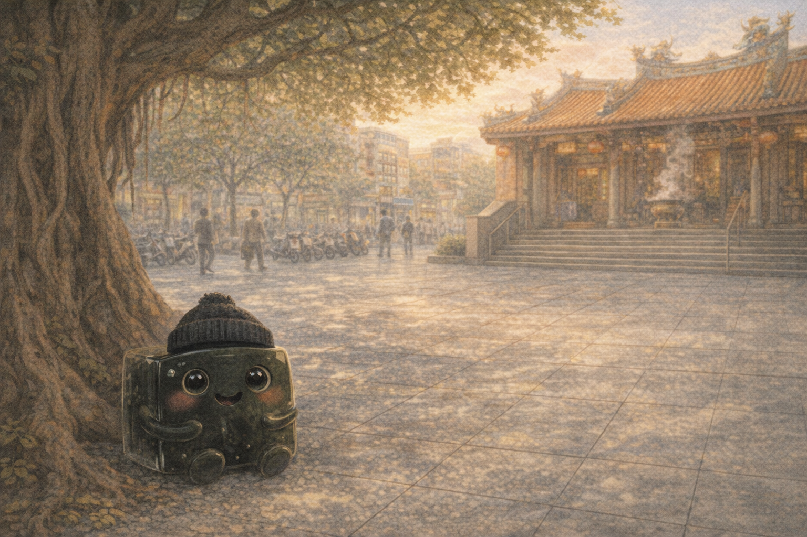
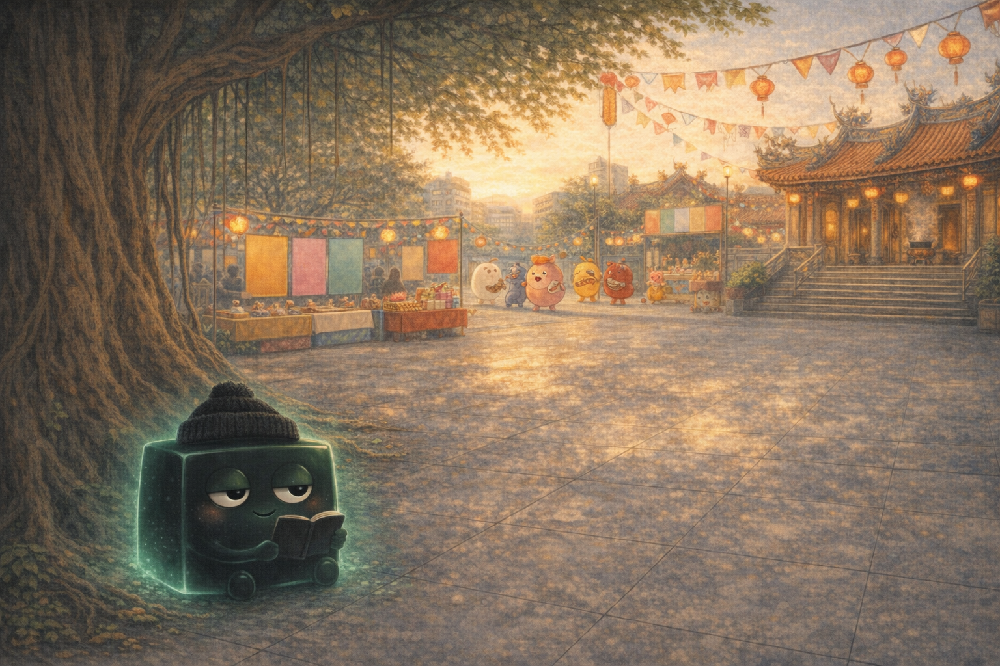
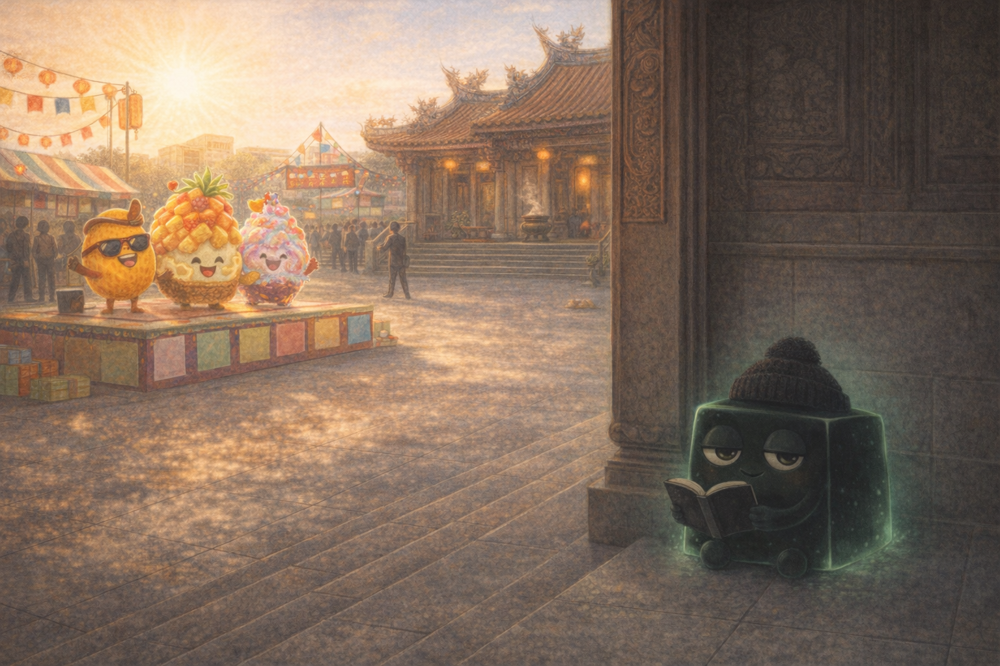
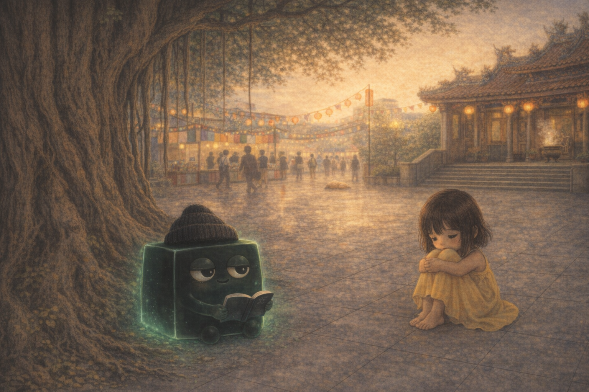
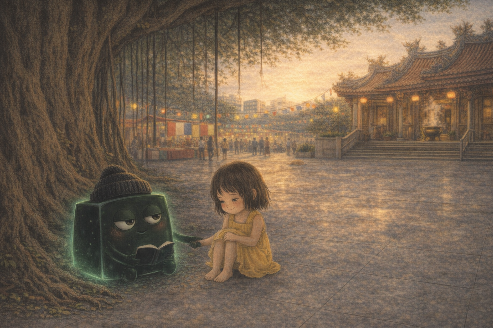
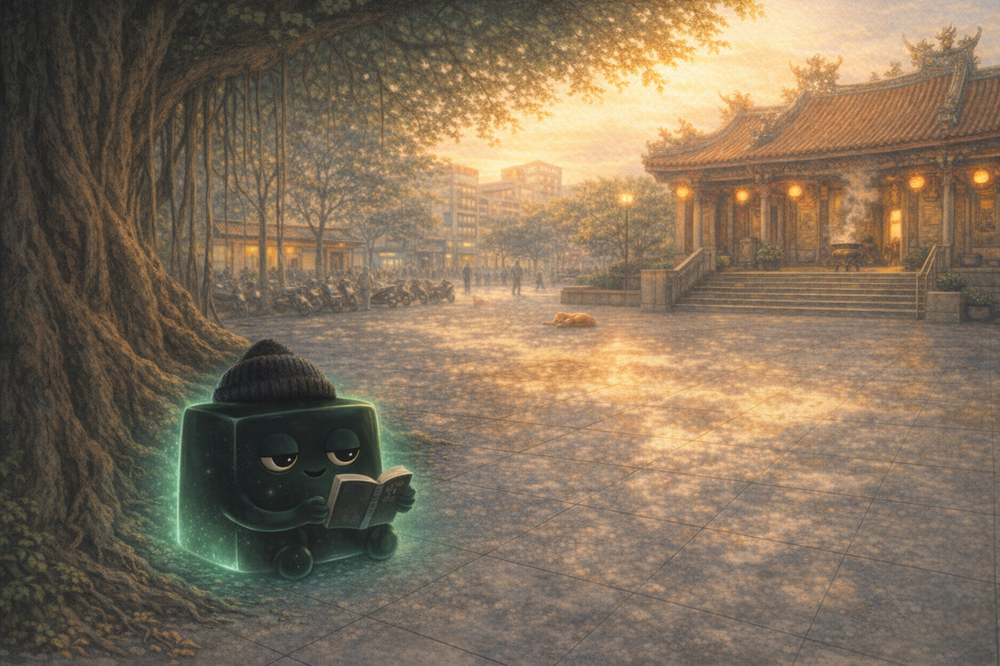

Story 05
Grass Jelly and the Cool Shadow
In hot, noisy Tainan, a quiet cube of grass jelly helps a child discover the strength of being calm.
Mandarin Spotlight: 仙草 (xiāncǎo) = grass jelly

Cool and Quiet
Nobody ever noticed Caǎo, and that was exactly how she liked it. She sat in the shade of a Tainan temple banyan tree, wearing a tiny black beanie and reading poetry.
Caǎo was 仙草 (xiāncǎo), grass jelly: dark, herbal, cool, and perfectly happy not being the loudest dessert in the room.

Festival Fever
Then the Tainan Dessert Festival arrived. Decorations filled the square, performers practiced, and everyone wanted to shine.
Mango bounced. Pineapple cakes rehearsed. Even tofu pudding, 豆花 (dòuhuā), hired a social media consultant. Caǎo turned a page. “Hard pass.”

Too Much Sun
The day was so hot everyone kept saying 熱死了 (rè sǐ le), “so hot I could die.”
Onstage, desserts sparkled and shouted. Shaved ice made a grand misty entrance. Caǎo watched from a temple doorway and murmured, “Amateurs.”

The Girl in Yellow
A little girl wandered away from the noisy crowd and sat under Caǎo’s banyan tree. Her yellow dress was damp from the heat, and her eyes were tired.
Caǎo waited a whole quiet minute. Then she said, “Hot out there, huh?”

The Cool Part
The girl said the festival was loud and bright and much too much. Caǎo understood that feeling.
“Grass jelly is usually the with,” Caǎo said. “Shaved ice with grass jelly. Sweet soup with grass jelly. But the quiet with can be the thing that gives everything balance.”

Poetry Shade
The girl admitted she liked reading more than performing. Caǎo’s half-lidded eyes brightened.
“Poetry?” she asked, offering her book. “Kid, you and I are going to get along great.” They sat together in the cool shade, and the silence felt friendly.

Something Better
Near sunset, the girl’s mother found her beneath the banyan roots with Caǎo resting on her lap.
“The festival is almost over,” her mother said. “They’re announcing the winners!” The girl smiled. “That’s okay. I found something better.”

The Surprise Winner
The ancient judge stepped to the microphone. Mango preened. Shaved ice tried not to melt.
“The winner,” said the judge, “is grass jelly.” The crowd gasped. Caǎo blinked slowly. “We weren’t even on stage.”

Quiet Makes It Sing
The judge explained that every dessert needed balance, depth, and coolness. The best ingredient was sometimes the one you noticed most when it was gone.
Caǎo accepted the small golden bowl trophy. “Chill,” she said. “I’ve got this.”

Exactly Enough
That evening, the girl returned with shaved ice topped with cool grass jelly. She took a bite and whispered, “好吃” (hǎochī), “delicious.”
Caǎo smiled, dark and cool and perfectly herself. You do not have to be the loudest thing in the room to matter. Sometimes the coolest thing you can do is simply be cool.
Goodnight, quiet one. May your calm feel like shade, your silence feel like depth, and your true self feel exactly enough.